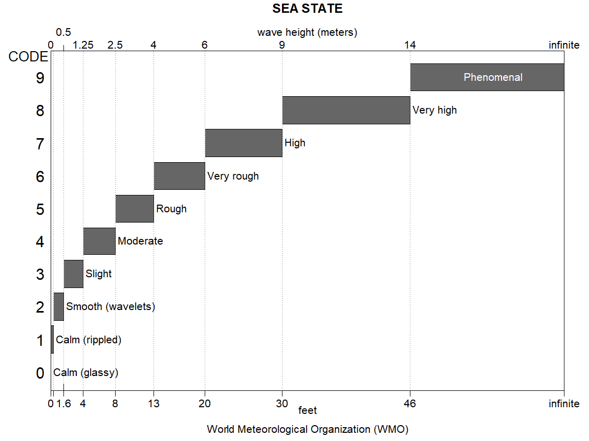

4 Matematički opis morskih valova
4.1 Uvod u modeliranje stanja mora
Realno valovito stanje mora izrazito je kaotično. Zbog toga se u inženjerskoj praksi ono matematički pretpostavlja i modelira kao superpozicija (zbrajanje) velikog broja idealnih, harmonijskih valova. Svaki od tih sastavnih valova ima različitu visinu, period, smjer napredovanja i slučajni fazni pomak. Ovakav pristup omogućava da se uzburkano more promatra kao trodimenzionalni model slučajnog procesa (e: random process / stochastic process).
Za potrebe projektiranja brodskih i pomorskih konstrukcija, matematički opis valovitog stanja mora temelji se na tri međusobno povezana pristupa:
- Deterministička valna teorija (e: Deterministic wave theory) se primjenjuje za analizu idealnih, pravilnih dvodimenzionalnih valova:
- Pravilne valove karakteriziraju konstantni parametri valnog profila: valna visina (\(H\)), valna duljina (\(\lambda\)), period (\(T\)) i faza, te posljedično konstantni kinematički parametri gibanja vodenih čestica (putanje, brzine i ubrzanja).
- Zbog svoje stroge matematičke pravilnosti, takvi se valovi nazivaju idealnim valovima (e: regular waves). U prirodi su izuzetno rijetki (najbliži im je oblik pravilnog mrtvog mora).
- Ovi harmonijski valovi su temelj (tzv. komponentni valovi) iz kojih se izgrađuje model uzburkanog mora. Njihovo je poznavanje ključno za linearnu hidrodinamičku analizu jer omogućavaju računanje prijenosnih funkcija (e: Transfer Functions / RAO) i primjenu principa superpozicije.
- Spektralne metode (e: Spectral methods) služe za kratkoročni prikaz (e: short-term representation) realnih, nepravilnih valova na određenoj lokaciji u kratkom vremenskom prozoru (najčešće od 20 minuta do najviše 3 sata, tijekom kojih se pretpostavlja da je oluja konstantna).
- Primjenom Wiener-Khinchinova teorema i autokorelacijske funkcije određuje se funkcija gustoće spektra (e: spectral density function), skraćeno zvana spektar valova (e: wave spectrum). Slikovito rečeno, spektar nam pokazuje kako je ukupna energija uzburkanog mora raspodijeljena po različitim frekvencijama komponentnih valova.
- Uobičajeni 2D spektri koriste se za tzv. dugobregovite valove (e: long-crested waves), gdje pretpostavljamo da svi valovi dolaze iz istog smjera. Budući da u stvarnosti valovi dolaze iz više smjerova (kratkobregoviti valovi / e: short-crested waves), za preciznije analize koriste se usmjereni spektri valova (e: directional wave spectra).
- Probabilistički opis (e: Probabilistic description) analizira statističku raspodjelu (vjerojatnost pojavljivanja) valnih karakteristika u tom istom kratkom vremenskom razdoblju, ne zamarajući se vremenskim redoslijedom kojim se ti valovi pojavljuju.
- Osnovna je pretpostavka da je samo izdizanje morske površine Gaussov proces (e: Gaussian process) s nultom srednjom vrijednošću (razina mirnog mora).
- Spektralni i probabilistički opisi izravno su povezani: varijanca Gaussove razdiobe jednaka je nultom spektralnom momentu (\(m_0\)), odnosno ukupnoj površini ispod krivulje spektra valova.
- Za statistički opis samih amplituda valova (ili visina) koristi se Rayleighova razdioba (e: Rayleigh distribution). Njenom integracijom računaju se ključne inženjerske veličine, poput značajne visine vala (e: significant wave height - \(H_s\)). Probabilističkim metodama određuju se i kratkoročne prognoze ekstremnih vrijednosti (npr. očekivani najveći val u oluji od 3 sata).
4.2 Teorija linearnih valova
Za hidrodinamičku analizu opterećenja i odziva broda, složeno stanje mora potrebno je svesti na osnovnu matematičku komponentu tj. pravilni harmonijski val. Najpoznatiji i u inženjerskoj praksi najčešće korišteni model je Airyjeva teorija linearnih valova (e: Airy linear wave theory), razvijena još u 19. stoljeću. Ona se temelji na teoriji potencijalnog strujanja (e: potential flow theory) kako bi se složene jednadžbe (Navier-Stokes) mogle linearno riješiti:
- Morska voda se promatra kao idealna tekućina: nestlačiva (e: incompressible) i neviskozna (e: inviscid), čime se zanemaruje trenje unutar fluida.
- Pretpostavlja se da je strujanje bezvrtložno (e: irrotational flow), što omogućava definiranje potencijala brzine (e: velocity potential), \(\Phi\).
- Ključna pretpostavka linearizacije je mala strmina vala. Pretpostavlja se da je visina vala (\(H\)) mala u usporedbi s njegovom duljinom (\(\lambda\)), odnosno da je strmina vala (e: wave steepness) \(H/\lambda \ll 1\). Tako se granični uvjeti na slobodnoj površini mogu primijeniti na razini mirnog mora (\(z = 0\)), umjesto na stvarnoj, valovitoj površini.
Pravilni linearni val napreduje u jednom smjeru bez promjene svog oblika. Osnovni geometrijski i kinematički parametri koji ga definiraju su:
- Valna duljina (e: wavelength), \(\lambda\): Horizontalna udaljenost između dva uzastopna brijega (ili dola) vala.
- Visina vala (e: wave height), \(H\): Vertikalna udaljenost od dola do brijega vala.
- Amplituda vala (e: wave amplitude), \(\zeta_a\): Udaljenost od razine mirnog mora do brijega vala. Kod linearnih valova vrijedi \(\zeta_a = H/2\).
- Period vala (e: wave period), \(T\): Vrijeme potrebno da val prijeđe udaljenost jedne valne duljine \(\lambda\).
- Brzina faze (e: phase velocity / celerity), \(c\): Brzina kojom se širi profil vala, definirana kao \(c = \lambda / T\).
Iz ovih osnovnih veličina, za potrebe matematičkih jednadžbi izvodimo:
- Kružnu frekvenciju (e: angular frequency): \(\omega = \frac{2\pi}{T}\)
- Valni broj (e: wave number): \(k = \frac{2\pi}{\lambda}\)
Jednadžba koja opisuje izdizanje slobodne površine mora (e: surface elevation), \(\zeta(x,t)\), u smjeru osi \(x\) i u vremenu \(t\) zadana je jednostavnom harmonijskom funkcijom:
\[\zeta(x,t) = \zeta_a \cos(kx - \omega t)\]
Najvažniji rezultat Airyjeve teorije je povezanost između valne duljine, perioda i dubine mora (\(d\)). Ta se povezanost naziva disperzijska relacija (e: dispersion relation):
\[\omega^2 = g k \tanh(kd)\]
U brodogradnji se najčešće proučava plovidba otvorenim oceanima, gdje je dubina mora znatno veća od polovice valne duljine (\(d > \lambda/2\)). To područje nazivamo dubokom vodom (e: deep water). U dubokoj vodi član \(\tanh(kd)\) teži prema \(1\), pa se disperzijska relacija drastično pojednostavljuje:
\[\omega^2 = gk\]
Iz ove relacije proizlazi temeljni inženjerki izraz za izračun valne duljine u dubokoj vodi (ako nam je poznat period, koji se najlakše mjeri):
\[\lambda = \frac{g}{2\pi} T^2 \approx 1.56 T^2\]
U dubokoj vodi, čestice vode opisuju kružne putanje (e: circular orbits). Promjer tih kružnica na samoj površini jednak je visini vala (\(H\)). Međutim, kako se spuštamo u dubinu mora (os \(z\) usmjerena prema dolje), radijus tih putanja te amplitude brzina i ubrzanja čestica opadaju po eksponencijalnom zakonu (\(e^{kz}\)). Već na dubini jednakoj polovici valne duljine (\(z = -\lambda/2\)), gibanje čestica postaje zanemarivo (radijus putanje pada na oko 4% površinskog). Upravo zato podmornice u zaronu ne osjećaju utjecaj oluja na površini, a dinamički tlakovi valova na dno velikih brodova znatno su manji od onih na vodenoj liniji.
Airyjeva teorija: Putanje čestica
4.3 Ostale valne teorije
Iako je Airyjeva linearna teorija temelj za većinu standardnih hidrodinamičkih proračuna broda na dubokoj vodi, ona postaje neprecizna kada valovi postanu izrazito strmi (velika visina u odnosu na duljinu) ili kada se valovi šire u plitkoj vodi.
Za razliku od idealnih sinusoida, stvarni olujni valovi su asimetrični: imaju oštre, uske i visoke brijegove te plitke, dugačke i zaravnjene dolove. Za precizan opis takvih valova, hidrodinamika koristi nelinearne valne teorije (e: non-linear wave theories).
Glavne nelinearne teorije koje se primjenjuju u brodogradnji i odobalnom inženjerstvu su:
- Stokesove teorije višeg reda (e: Higher-order Stokes wave theories): Matematička proširenja linearne teorije primjenom perturbacijskih metoda. U inženjerskoj praksi najčešće se koriste teorije 2., 3. i 5. reda. Prikladne su za strme valove u dubokoj i prijelaznoj vodi (e: deep and transitional water).
- Knoidalna teorija (e: Cnoidal wave theory): Temelji se na eliptičkim funkcijama (Korteweg-de Vries jednadžba). Primjenjuje se isključivo za valove u plitkoj vodi (e: shallow water), gdje Stokesove teorije prestaju vrijediti.
- Teorija usamljenog vala (e: Solitary wave theory): Predstavlja granični slučaj knoidalne teorije za izrazito plitku vodu, gdje se val sastoji samo od jednog brijega koji se kreće potpuno iznad razine mirnog mora, bez dola (npr. tsunami pri dolasku u obalno područje).
- Teorija strujne funkcije (e: Stream function theory): Numerički pristup koji je razvio R.G. Dean. Ne oslanja se na analitičke aproksimacije i pokazuje izvrsno podudaranje sa stvarnim, ekstremnim asimetričnim valovima u gotovo svim dubinama.
Odabir ispravne matematičke teorije ključan je korak prije početka bilo kakvog proračuna opterećenja. U tu se svrhu u inženjerskoj praksi standardno koristi dijagram područja primjenjivosti (najpoznatiji je tzv. Le Méhautéov dijagram).
Dijagram jasno razgraničava koja je teorija fizikalno najtočnija u ovisnosti o dva bezdimenzionalna parametra:
- Parametar plitkosti / relativne dubine vode: \(d / (gT^2)\)
- Parametar strmine vala: \(H / (gT^2)\)
Pored granica pojedinih teorija, ovaj dijagram definira i apsolutnu fizikalnu granicu loma vala (e: breaking limit), iznad koje val više ne može postojati u zadanom obliku već se ruši i pretvara u bijelu pjenu.

4.4 Dugoročna prognoza valova
Dok spektralne metode opisuju stanje mora u trajanju od par sati, dugoročna prognoza valova (e: long-term wave forecasting) je statistički postupak predviđanja valnih amplituda i stanja mora koji se primjenjuje na životni vijek broda (obično 20 do 25 godina).
Dugoročne prognoze presudne su za određivanje projektnih valnih opterećenja (e: design wave loads). Prema geografskom obuhvatu dijelimo ih na:
- Lokalne prognoze: Odnose se na jednu specifičnu točku (npr. lokacija naftne platforme). Gotovo se isključivo koriste za projektiranje fiksnih odobalnih pomorskih konstrukcija (e: offshore structures).
- Regionalne prognoze: Odnose se na šira morska područja (npr. tablice stanja mora za Mediteran, Sjeverno more ili Jadran). Za analizu ekstremnih opterećenja trgovačkih prekooceanskih brodova standardno se koristi regionalna prognoza za Sjeverni Atlantik (e: North Atlantic wave data), jer on predstavlja najgrublje uvjete plovidbe na svijetu (tzv. IACS Rec. 34).
- Globalne prognoze: Kombinacija klimatskih podataka svjetskih mora (npr. Global Wave Statistics). Koriste se za analizu nakupljanja oštećenja i zamora materijala (e: fatigue analysis), gdje je bitno uzeti u obzir sva umjerena stanja mora kroz koja će brod proći tijekom svoje službe na različitim rutama.
4.5 Tablice stanja mora
U pomorstvu je uobičajeno korištenje Beaufortove ljestvice vjetra, koja u sebi uključuje statističku vezu između brzine vjetra, stanja mora i značajne visine vala. Beaufortova ljestvica se primjenjuje za izračun brzine vjetra na moru, no vrijedi samo za valove nastale pri lokalnim sinoptičkim uvjetima, odnosno pretpostavlja da nije bilo dovoljno vremena za nastanak potpuno razvijenog mora.

| Bf | Opis | V, čv | V, m/s | V, km/h | Učinak | H 1/3 , m |
|---|---|---|---|---|---|---|
| 0 | Tišina | 0-1 | 0-0.2 | 0-1 | More mirno i glatko kao zrcalo. | 0 |
| 1 | Lahor | 1-3 | 0.3-1.5 | 2-5 | Čovjek ga još ne osjeća. Na moru mali nabori bez pjene. | 0.1-0.2 |
| 2 | Povjetarac | 4-6 | 1.6-3.3 | 6-12 | Upravo se osjeća na licu. Na moru sitni valovi, kratki ali izraziti. | 0.3-0.5 |
| 3 | Slabi vjetar | 7-10 | 3.4-5.4 | 13-19 | Lagano pokreće zastavu. Na moru mali valovi, kreste se počinju lomiti. | 0.6-1 |
| 4 | Umjereni vjetar | 11-16 | 5.5-7.9 | 20-28 | Na moru sve duži valovi, pjena česta. | 1.5 |
| 5 | Umjereno jaki vjetar | 17-21 | 8.0-10.7 | 29-38 | Na moru umjereni valovi, puno pjene, moguća morska prašina. | 2 |
| 6 | Jaki vjetar | 22-27 | 10.8-13.8 | 39-49 | Stvaraju se veliki valovi, bijele kreste svuda su rasprostranjene. | 3.5 |
| 7 | Žestoki vjetar | 28-33 | 13.9-17.1 | 50-61 | More raste. Bijela pjena javlja se u dugim prugama. | 5 |
| 8 | Olujni vjetar | 34-40 | 17.2-20.7 | 53-74 | Umjereno visoki valovi. Od vrhova kresta otkidaju se vrtlozi morskih kapljica. | 7.5 |
| 9 | Jaki olujni vjetar | 41-47 | 20.8-24.4 | 75-87 | Visoki valovi, debele pruge pjene niz vjetar, morski dim. | 9.5 |
| 10 | Orkanski | 48-55 | 24.5-28.4 | 88-102 | Cijela površina mora ima bijeli izgled. Vidljivost smanjena. | 12 |
| 11 | Jaki orkanski | 56-63 | 28.5-32.6 | 103-117 | Neobično visoki valovi, brodovi se povremeno mogu gubiti iz vida. Posvuda se kreste valova pretvaraju u pjenu. | 15 |
| 12 | Orkan | 64-71 | 32.7-36.9 | 118-133 | Zrak je pun morske prašine, a more je zbog toga potpuno bijelo. Vidljivost je vrlo smanjena. | >15 |
Osim Beaufortove ljestvice vjetra, u brodogradnji se koristi i međunarodna ljestvica stanja mora (e: WMO Sea State Code), koja klasificira stanje mora prema značajnoj visini vala i tipičnom vršnom periodu. Ova klasifikacija prihvaćena je od strane Svjetske meteorološke organizacije (WMO), NATO-a (STANAG 4194) i ITTC-a te se redovito koristi u specifikacijama pomorstvenosti.
| SS | Opis | \(H_S\) (m) | \(T_P\) (s) |
|---|---|---|---|
| 0 | Zrcalno mirno (e: calm, glassy) | 0 | – |
| 1 | Mirno (e: calm, rippled) | 0–0.1 | – |
| 2 | Blago valovito (e: smooth) | 0.1–0.5 | 3.3–12.8 |
| 3 | Umjereno (e: slight) | 0.5–1.25 | 5.0–14.8 |
| 4 | Dosta nemirno (e: moderate) | 1.25–2.5 | 6.1–15.2 |
| 5 | Nemirno (e: rough) | 2.5–4.0 | 8.3–15.5 |
| 6 | Vrlo nemirno (e: very rough) | 4.0–6.0 | 9.8–16.2 |
| 7 | Visoko (e: high) | 6.0–9.0 | 11.8–18.5 |
| 8 | Vrlo visoko (e: very high) | 9.0–14.0 | 14.2–18.6 |
| 9 | Fenomenalno (e: phenomenal) | >14.0 | >18.6 |
